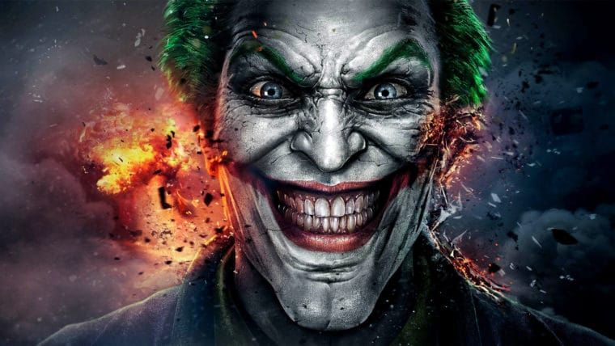
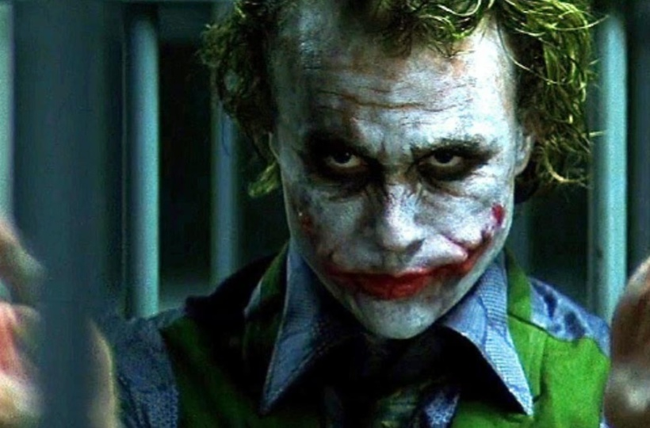
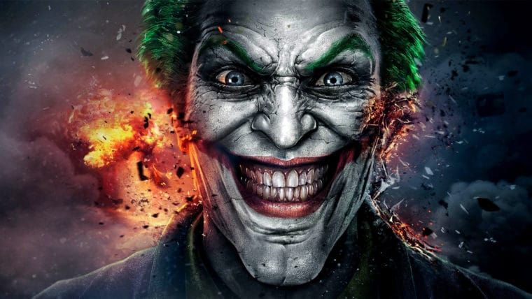
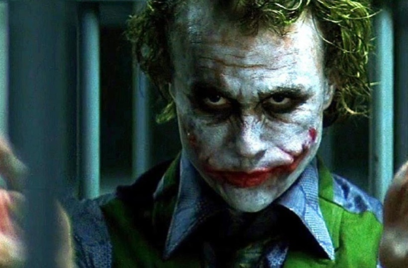

O Coringa é um supervilão fictício que aparece nos livros de histórias em quadrinhos norte-americanos publicados pela editora estadunidense DC Comics. Foi criado por Jerry Robinson, Bill Finger e Bob Kane e apareceu pela primeira vez em Batman #1 (Abril de 1940).O Coringa é um mero agente do caos. Diferente de outros vilões com grandes ambições e desejos, o Palhaço do Crime só quer ver o circo pegar fogo. Mas isso não quer dizer simplesmente abrir mão de tudo pelo simples sentimento da zoeira. O Coringa planeja suas ações, ele apenas não mede suas consequências.
 


